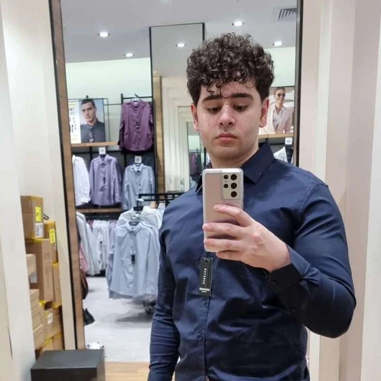

Hi! My name's Omar Dalati and I am 21 years old, I was born and raised in Melbourne, Australia, however my parents are from Lebanon. My highest education currently is a Certificate IV in Information Technology and completed at Chisholm Institute 2019. Honestly my hobbies just consist of video games specifically League of Legends and World of Warcraft! And sometimes watching anime / reading manga! And i also have a little budgie, his name is bucky!
Here is a photo of me!
What is your interest in IT? What my interest within IT is honestly many things that branch from programming, networking, video games, technology as well. Creating something from nothing is honestly quite challenging but at the same time it is so rewarding that's why I've taken such interest within programming itself. Networking is very interesting more than anything, understanding how servers work is something I really desire to learn (I had dabbled in Networking in my Certificate IV in IT, but it's been quite some time now.)
When did your interest in IT start? Honestly when I was a child, I learnt the physical side of computers and how to build computers all from scratch at a young age, and ever since then I've been my family and friends technology guru and they always reach out to me for assistance.
Was there a particular event or person that sparked your interest? Yeah! I had in instance in primary school! My IT Teacher had asked me if I was interested in building / experimenting with the computers at school and I said yes, but it was daunting at first going into building a computer, but I had guidance and all I remember it being fun, this was my earliest memory of experiencing technology and never looked back since.
Outline your IT experience? I have a Certificate IV in Information Technology, which I had completed at Chisholm Institute in 2019, and the amount of knowledge I had gained during my time there was amazing, unfortunately it is now 2022 and I've forgotten most of it but hoping the course jogs my memory. And I also had previously studied with Swinburne University, Bachelors of ICT, however I stopped my studies to work full time, so I only roughly completed a years' worth of university.
Why did you choose to come to RMIT? My co-worker, had told me about Open University, never heard of them before and the amount of information that I was provided about the course and as well as the guidance that I had was amazing and I was very interested in starting!
What do you expect to learn during your studies? What it is I expect to learn from my studies is to gain the knowledge to be able to strive for a career within programming specifically and or networking. But this doesn't come directly from the university from themselves, I must put in the hard-work and commit my time to my studies to be able to learn. I am excited to start Introduction to Programming in the future.